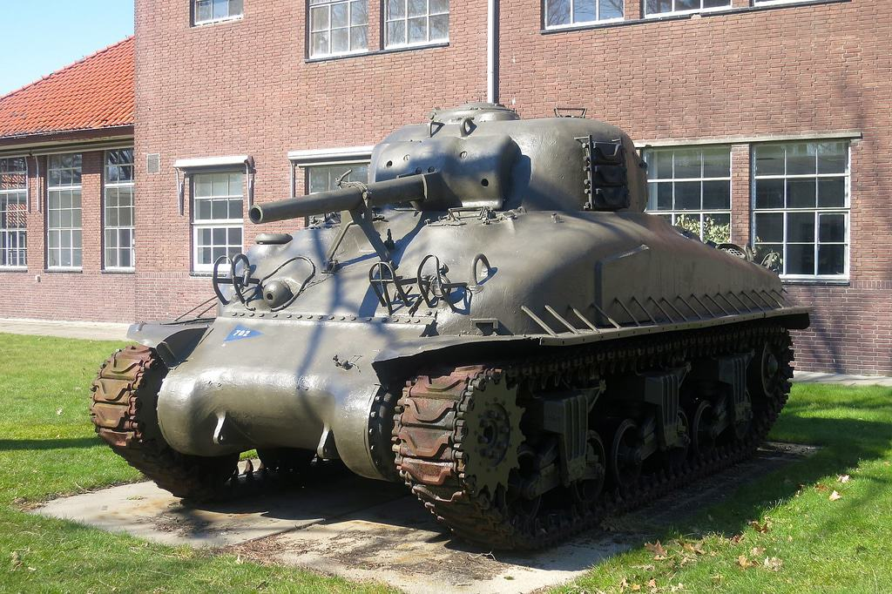
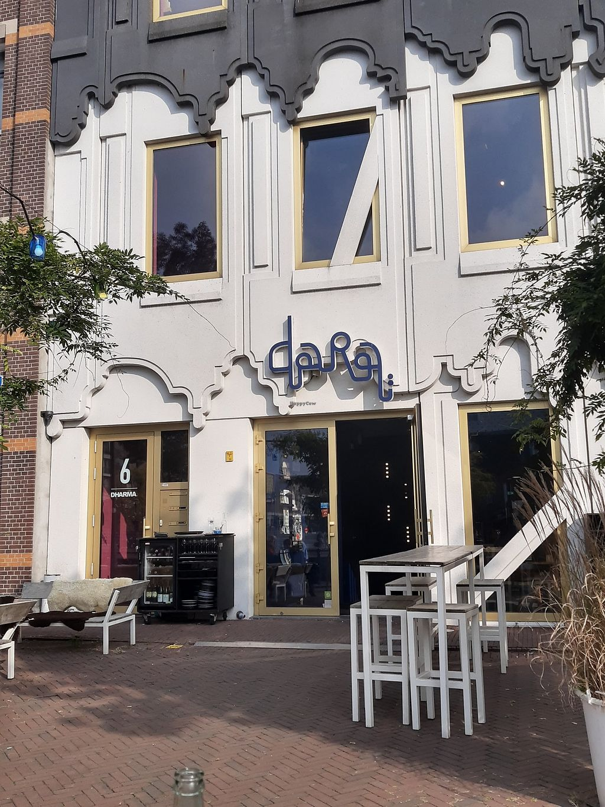
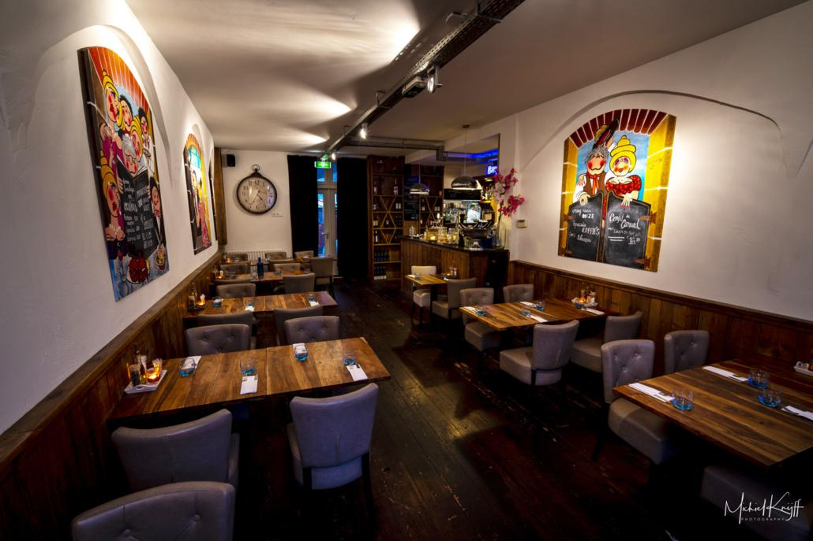
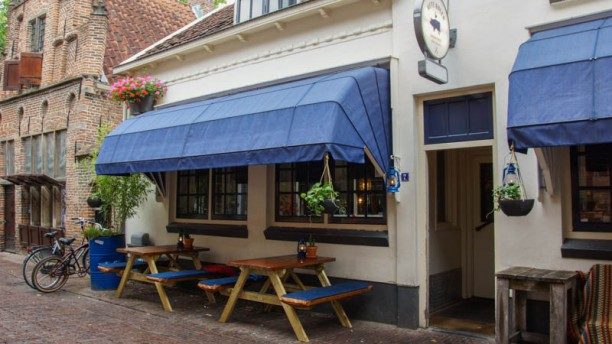
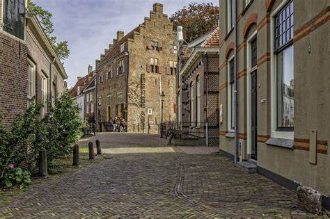
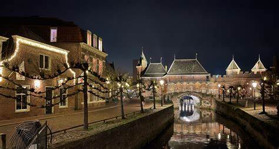
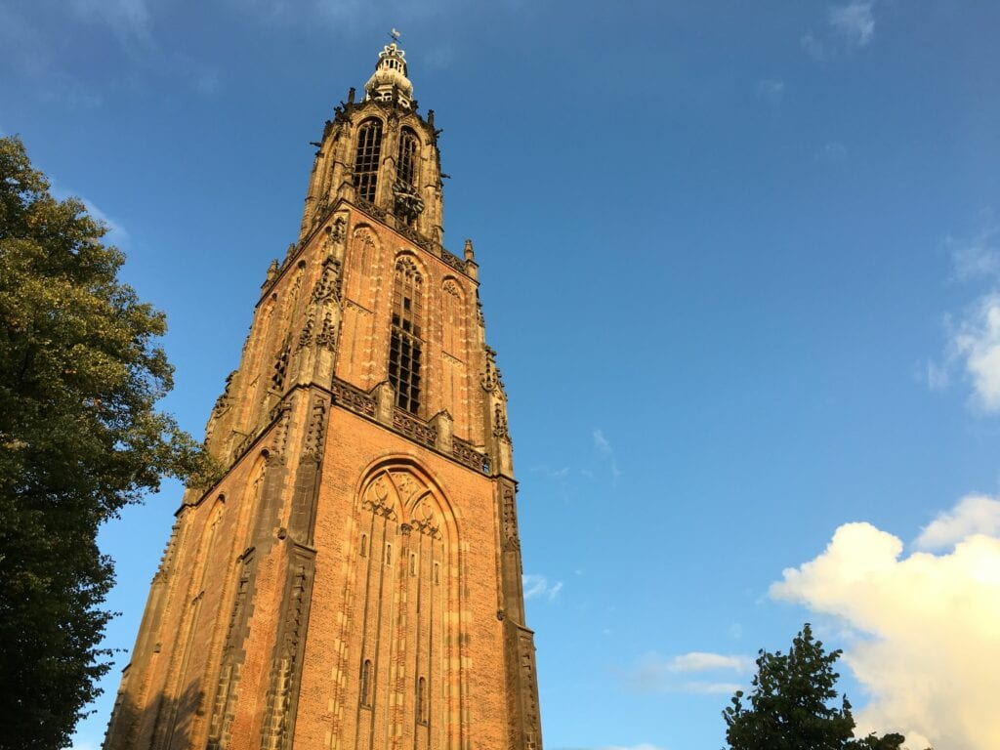

Dutch cavalry museum

About
The Koppelpoort is a city gate in Amersfoort. It is a combination of land and water gate. The name is probably derived from the East Middle Dutch word Koppel meaning meadow.
Duration: Less than 1 hour
Best Nearby Restaurants

Dara Amersfoort
⭐ 4.1 · Seafood, Mediterranean
359 ft · $$–$$$

Restaurant Voor Iedereen
⭐ 4.5 · Dutch, Seafood
0.2 mi · $$–$$$

Hete Kolen
⭐ 4.5 · Dutch, Barbecue
0.3 mi · $$–$$$
Top Attractions Nearby

Muurhuizen
⭐ 4.5 · Historic Sites
0.4 mi

Stadsbrouwerij De Drie Ringen
⭐ 4.4 · Brewery
190 ft

Onze-Lieve-Vrouwetoren
⭐ 4.4 · Landmarks
0.3 mi
The Location
Based on the location, you may see what may be around Koppelpoort